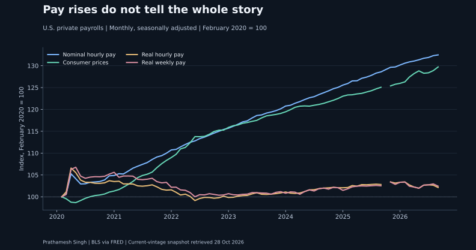
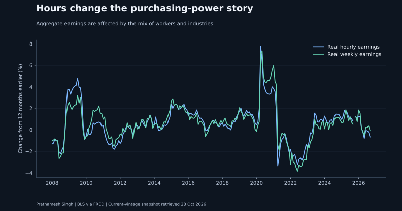
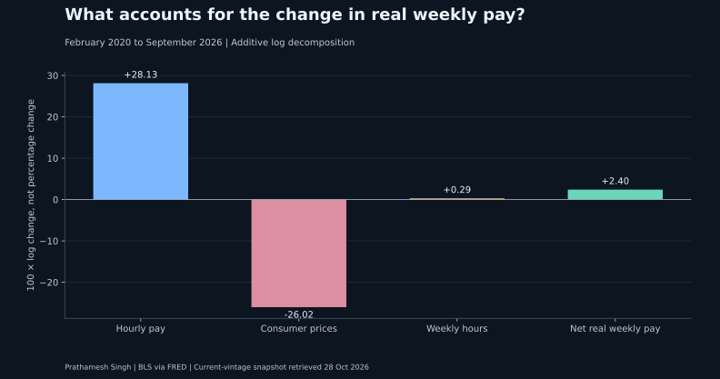

When a pay rise buys less
From February 2020 to September 2026, real hourly earnings changed +2.1% and real weekly earnings changed +2.4%. In the latest twelve months, real weekly earnings changed -0.1%.
The question
When nominal pay rises, how much purchasing power remains after prices and weekly hours change? A workforce finance team needs this distinction before translating a broad wage statistic into a payroll assumption.
The finding
From February 2020 to September 2026, real hourly earnings changed +2.1% and real weekly earnings changed +2.4%. In the latest twelve months, real weekly earnings changed -0.1%.
This is an accounting decomposition of aggregate series. It does not identify a causal inflation effect or measure raises received by individual workers.



Does the starting point change the result?
Three prespecified anchors show the sensitivity to the comparison month. February 2020 is useful for a pre-pandemic comparison, but it is not a neutral universal baseline.
| anchor | end | Real hourly change (%) | Real weekly change (%) |
|---|---|---|---|
| 2007-01-01 | 2026-09-01 | 11.085 | 11.409 |
| 2019-01-01 | 2026-09-01 | 2.919 | 2.621 |
| 2020-02-01 | 2026-09-01 | 2.129 | 2.426 |
Turn the evidence into an explicit assumption
The budget workbench solves for an hourly raise consistent with a chosen inflation rate, hours change and target change in real weekly pay. It is a scenario identity, not a recommended compensation rate.
Data and method
Inner calendar alignment of three monthly seasonally adjusted series: CES0500000003, AWHAETP and CPIAUCSL. Duplicate dates, missing calendar rows and non-positive observed values fail the build. October 2025 CPI is absent in this export. BLS attributes missing collection to the 2025 federal lapse in appropriations. That month remains missing in real-pay calculations and charts; it is never interpolated or forward-filled. The calendar is retained so twelve-month comparisons do not shift. Real weekly earnings = hourly earnings × weekly hours ÷ CPI × 100. Log changes provide an exact additive bridge. SQL independently reconciles all monthly real weekly calculations.
Limitations
These are national private-sector averages, not the pay path of the same workers. Changing employment composition can move the averages. CPI-U does not describe an individual household or Houston specifically. Earnings exclude benefits, employer payroll taxes and irregular bonuses. Historical values are revised; this is not a real-time forecast or an employment recommendation.
Inspect the evidence
Monthly data and calculations · Anchor sensitivity · SQL reconciliation · Hypothetical budget grid · Machine-readable results
Sources: BLS hourly earnings via FRED, BLS weekly hours via FRED, BLS CPI-U via FRED, BLS Real Earnings, CES definitions and composition caveats. See also the BLS missing CPI explanation. Snapshot hashes and exact export URLs are in the repository data manifest.